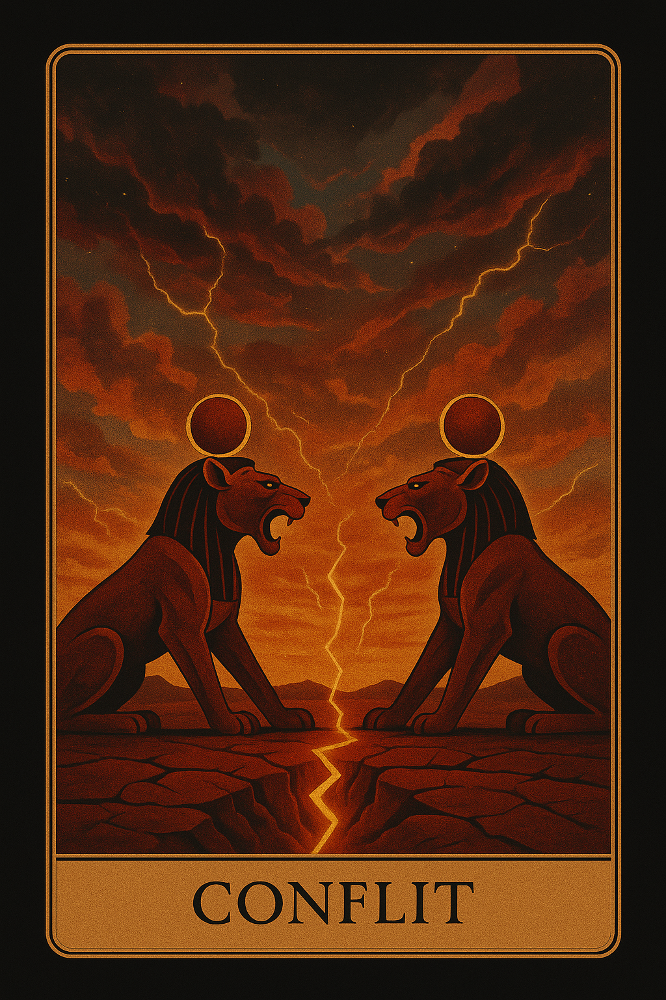
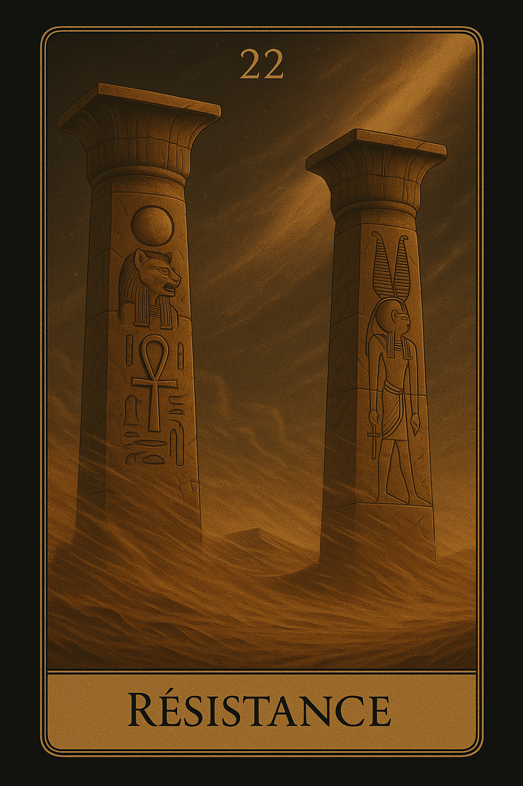
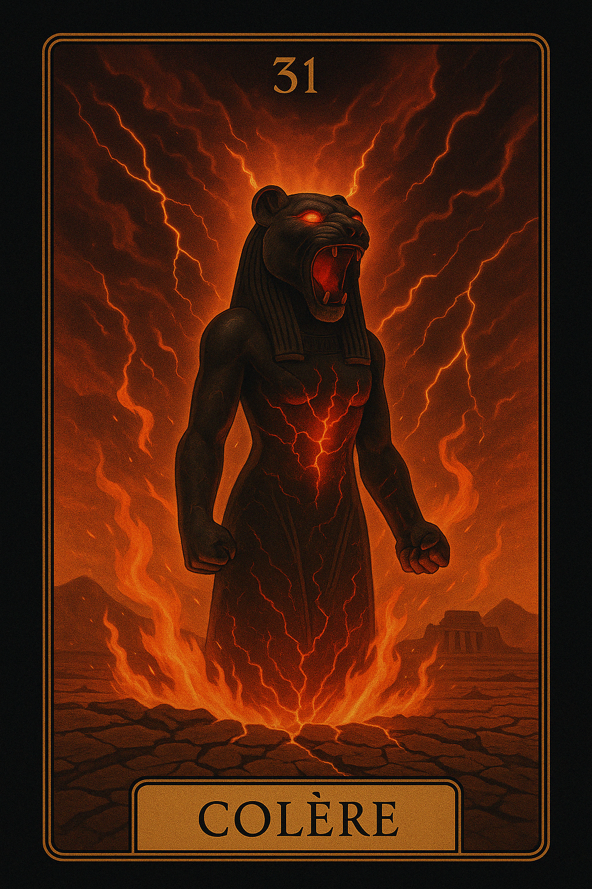
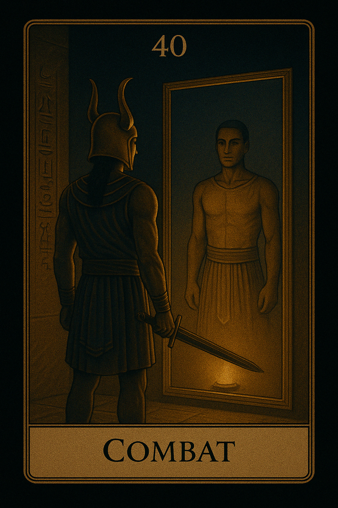
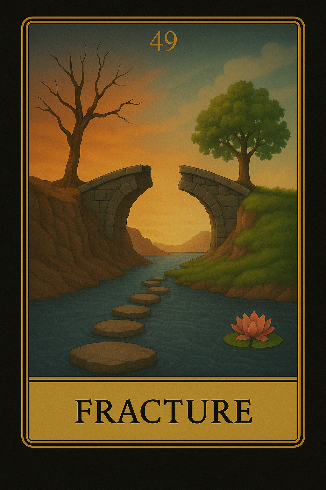
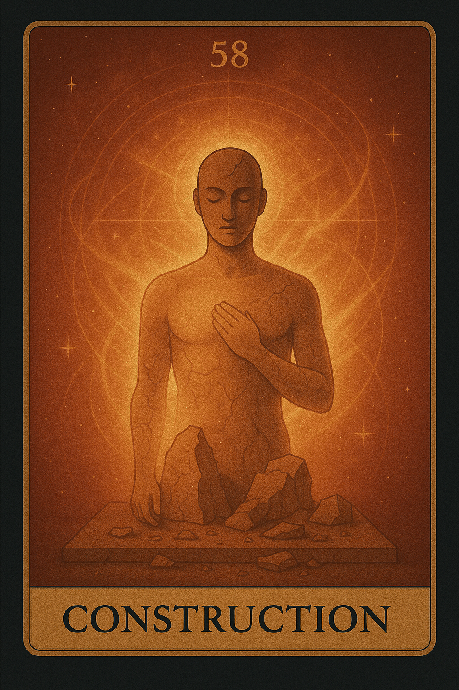
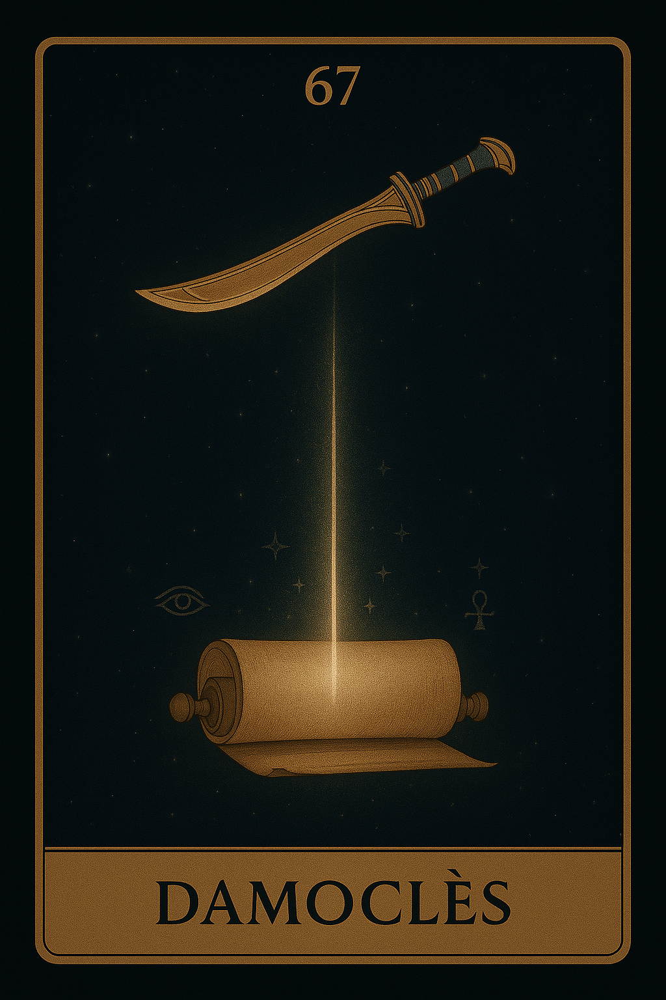
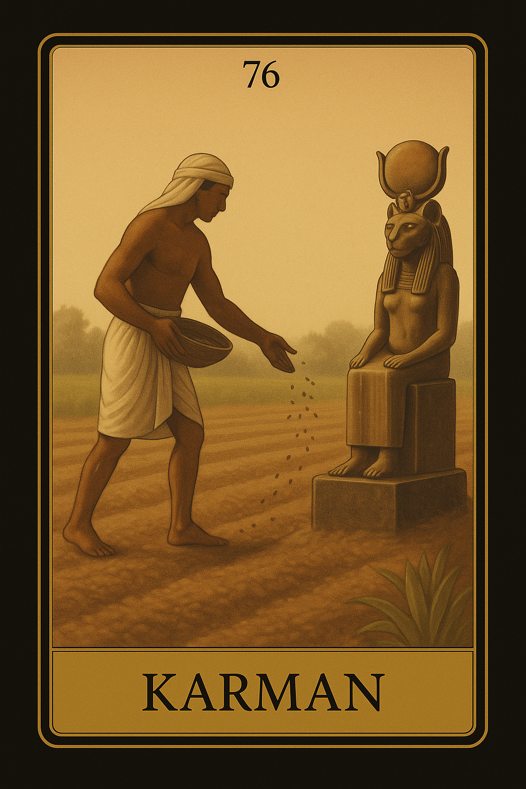

Famille 4 – Sekhmet (Mars)
Cette famille explore la sphère des émotions, des pulsions profondes et de la puissance vitale. Elle est liée à Mars et à Sekhmet, déesse du feu intérieur, du courage et de la transformation. Elle révèle nos colères, nos élans, mais aussi notre capacité à agir et à trancher avec justesse.
Carte 4 – Conflit
Mots-clés : Violence, Colère, Bataille personnelle, Frustration, Ressentiment
Numérologie : 4 – Structure, Stabilité, Défi, Conflit
Planète principale : Mars
Divinité principale : Sekhmet
Planète secondaire : Soleil
Divinité secondaire : Râ
Interprétation de la carte 4 : Conflit (droite)
1. Caractère de la personne
La carte Conflit dans sa position droite évoque une personne avec une forte énergie intérieure, souvent marquée par des émotions intenses telles que la colère ou la frustration. Sous l'influence de Mars et de Sekhmet, cette personne peut vivre des batailles internes, où des désirs conflictuels s’opposent. Elle peut être perçue comme une personnalité forte, voire parfois impulsive, qui lutte contre elle-même ou contre les autres. L’influence secondaire du Soleil et de Râ introduit un certain éclat et une lumière intérieure qui peuvent venir éclairer la voie à suivre, mais seulement si la personne parvient à maîtriser sa violence interne et à trouver un équilibre. Ce conflit peut aussi mener à une catalyse personnelle, où la personne se forge à travers les défis.
2. Plan affectif
Sur le plan affectif, Conflit indique des relations tendues, marquées par des décalages importants dans les émotions ou les attentes. Il peut y avoir une confrontation directe avec un partenaire, ou des sentiments de frustration dans une relation qui ne progresse pas. L’influence de Mars et de Sekhmet amplifie l’énergie de la bataille émotionnelle, avec des sentiments de colère ou de résistance. L’influence secondaire du Soleil et de Râ pourrait suggérer qu'une réflexion ou une prise de recul pourrait aider à alléger la situation. Cependant, cette carte demande de trouver un équilibre pour éviter l'explosion émotionnelle ou l'éloignement.
3. Plan matériel
Dans le domaine matériel, Conflit suggère une lutte pour les ressources ou des difficultés liées à la gestion de l’argent ou du travail. Cela peut indiquer un moment où des tensions externes ou des obstacles viennent perturber le bon déroulement des affaires ou des projets. Il peut s’agir d'un problème administratif, de frustrations liées à des retards ou des obstacles financiers qui sont difficiles à surmonter. L'influence de Mars et de Sekhmet indique une phase de test, où il faudra faire face à des difficultés et peut-être même se défendre contre des oppositions externes. Cependant, l'influence du Soleil et de Râ peut apporter la lumière nécessaire pour voir au-delà du conflit et trouver la solution.
4. Plan professionnel
Professionnellement, Conflit peut signaler une confrontation au travail ou un conflit avec des collègues ou des supérieurs hiérarchiques. Cela peut aussi représenter un désaccord sur les orientations d’un projet ou une pression intense dans un environnement professionnel. La carte suggère que la personne pourrait se retrouver dans une situation de bataille interne quant à sa carrière ou à ses objectifs professionnels. Les influences de Mars et de Sekhmet amènent une grande énergie de compétition, parfois au prix de conflits ouverts. Cependant, l’influence du Soleil et de Râ adoucit cette énergie et invite à s’éclairer sur les véritables causes du conflit pour trouver une solution constructive.
5. Plan spirituel
Spirituellement, Conflit représente un combat intérieur avec les aspects sombres de soi-même ou avec des forces externes qui viennent perturber l'évolution spirituelle. Cette carte peut indiquer une dissonance dans les croyances ou les pratiques spirituelles, une lutte entre deux chemins ou une incapacité à avancer spirituellement en raison de conflits internes. Cependant, l'influence du Soleil et de Râ indique que ces obstacles spirituels peuvent être surmontés par la lumière intérieure et une réflexion profonde. Il est essentiel d’accepter cette confrontation spirituelle comme un moyen de se purifier et de se renforcer à travers l’épreuve.
Carte 4 : Conflit (inversée)
Lorsqu’elle est inversée, la carte Conflit indique une disruption dans l’énergie de la personne, souvent marquée par des difficultés à gérer la colère, des blocages internes ou des violences non résolues. Cela suggère que les émotions conflictuelles sont refoulées, ignorées ou réprimées, créant des tensions internes qui rendent difficile l'avancée.
1. Caractère de la personne
En position inversée, Conflit peut suggérer une personne enfermée dans ses frustrations, incapable de libérer sa colère de manière constructive. La personne peut ressentir un stress constant, une pression interne sans pouvoir l'exprimer, ce qui pourrait mener à un épuisement émotionnel. L’influence de Sekhmet (divinité de la guerre et de la destruction) dans cette carte inversée peut indiquer que les émotions sont trop retenues ou cachées, créant des conflits internes dévastateurs. L’influence du Soleil et de Râ reste présente, mais elle peut être bloquée, empêchant la personne de voir la lumière au bout du tunnel.
2. Plan affectif
Dans le domaine affectif, l’inversion de Conflit pourrait indiquer une relation étouffée par des émotions refoulées, des colères non exprimées ou des rancunes qui n'ont jamais été réglées. Cela peut également symboliser un déséquilibre émotionnel où la personne évite de confronter les problèmes, préférant garder les choses pour elle-même. Le manque de communication ouverte peut mener à un éloignement émotionnel entre les partenaires.
3. Plan matériel
Sur le plan matériel, l’inversion de Conflit peut indiquer des obstacles persistants qui sont perçus comme insurmontables ou un blocage des ressources dans les projets professionnels. La personne pourrait rencontrer des retards chroniques, ou bien les choses peuvent sembler bloquées sans aucune progression. L'influence du Soleil et de Râ est présente, mais l'absence de clarté et de vision positive empêche tout avancée.
4. Plan professionnel
Dans le domaine professionnel, Conflit inversé symbolise un climat de travail toxique, marqué par des rancunes, des doutes ou une opposition constante qui ne peut être exprimée ouvertement. Cela peut aussi signifier des freins ou des retards dus à des conflits de pouvoir ou des problèmes de communication avec les collègues ou les supérieurs. L'influence de Mars et de Sekhmet rend cette phase difficile à surmonter, mais l'influence secondaire du Soleil et de Râ suggère qu'une réflexion profonde et stratégique pourrait résoudre ces tensions.
5. Plan spirituel
Spirituellement, l’inversion de Conflit suggère un déséquilibre intérieur profond, où la personne a du mal à avancer sur son chemin spirituel en raison de conflits internes non résolus. Elle peut avoir l'impression d'être bloquée dans son développement spirituel, incapable de libérer les tensions. Cependant, l'influence de Râ et du Soleil donne un éclat intérieur qu'il faut chercher à exploiter pour surmonter cette période de stagnation.
Résumé de la carte 4 : Conflit
La carte Conflit, sous l’influence de Mars et de Sekhmet, symbolise un moment où des émotions fortes comme la colère, la frustration et le ressentiment sont à leur apogée. Elle peut représenter une bataille interne à surmonter. En position inversée, les conflits deviennent internes et réprimés, ce qui crée une stagnation émotionnelle. Cependant, l’influence du Soleil et de Râ en influence secondaire invite à trouver des solutions en réfléchissant à la source du conflit et en apportant lumière et équilibre à la situation.
Carte 13 – Affrontement

Mots-clés : : Confrontation, Rupture, Tension extrême, Agression, Dispute
Numérologie : 13 – Transformation, Changement radical, Déconstruction, Libération
Planète principale : Mars
Divinité principale : Sekhmet
Planète secondaire : Terre
Divinité secondaire : Geb
Interprétation de la carte 13 : Affrontement (droite)
1. Caractère de la personne
La carte Affrontement représente une personne qui vit un conflit intérieur ou qui est prête à se confronter à une situation difficile. Cela peut être une personnalité forte et déterminée, mais parfois impulsive ou agressive sous l’influence de Mars et de Sekhmet. Cette personne peut être en phase de transformation et ressentir un besoin profond de changer ou de renverser une situation en sa faveur, quitte à passer par une confrontation directe. Elle peut avoir une approche plus belligérante ou combatif pour faire face à la situation, mais l’influence de Terre / Geb montre qu’elle peut aussi être dotée d’une résilience et d’un ancrage profond, lui permettant de se reconstruire après des ruptures ou des conflits. Cette carte montre une personne qui peut faire face à des défis avec force, mais aussi parfois avec une démarche trop abrasive ou trop radicale.
2. Plan affectif
Sur le plan affectif, Affrontement représente une relation où des tensions extrêmes ou une confrontation violente peuvent se produire. Cela peut être une rupture ou une dispute importante, mais la carte indique également qu’il est nécessaire de mettre les choses à plat et de résoudre les conflits même s’il faut passer par une rupture difficile. L’influence de Sekhmet pousse à une intensité émotionnelle et à une agression verbale ou physique, mais l’influence de Terre / Geb rappelle l’importance d’ancrer cette confrontation dans la réalité, de ne pas agir uniquement sous l’impulsion, mais de prendre le temps de comprendre les réactions émotionnelles et de réparer les blessures causées. Cette carte suggère qu’une rupture difficile pourrait mener à une réconciliation ou une libération émotionnelle une fois que les tensions sont dissipées.
3. Plan matériel
Sur le plan matériel, Affrontement symbolise une période où la personne pourrait se retrouver dans une confrontation avec un obstacle important. Cela pourrait être une dispute professionnelle, un conflit juridique, ou une situation où la personne doit faire face à des tensions externes. L'influence de Mars / Sekhmet peut augmenter l’agressivité dans les négociations ou la manière de résoudre les conflits matériels, mais Terre / Geb suggère que la personne doit rester ancrée et se concentrer sur des solutions pratiques pour surmonter les défis. Cela pourrait également indiquer qu’une rupture professionnelle (changement de travail, projet, etc.) est nécessaire pour faire avancer les choses.
4. Plan professionnel
Dans le domaine professionnel, Affrontement représente un conflit de pouvoir ou une confrontation directe avec un collègue, un supérieur ou un partenaire d'affaires. Il peut aussi symboliser une compétition où la personne doit battre ses adversaires pour avancer. Cela peut aussi signaler un moment où la personne doit défendre ses idées avec une tension extrême. L'influence de Sekhmet apporte une grande force intérieure pour affronter la situation, mais l'influence de Terre / Geb montre qu'il est crucial de rester réaliste et de ne pas laisser les émotions prendre le dessus. La personne pourrait aussi être confrontée à une rupture professionnelle ou un désaccord majeur, et la carte indique que résoudre le conflit de manière sensible et pratique est nécessaire pour progresser.
5. Plan spirituel
Spirituellement, Affrontement symbolise une épreuve spirituelle importante, où la personne peut se retrouver face à des doutes ou des conflits intérieurs qui remettent en question ses croyances profondes. Cela peut être une bataille intérieure pour découvrir la vérité spirituelle ou un test spirituel important qui pousse la personne à confronter ses peurs et à se libérer de certaines illusions. Mars / Sekhmet apporte l'énergie nécessaire pour briser les vieux schémas et dépasser les dérivations spirituelles, mais l’influence secondaire de Terre / Geb indique qu'il faut rester ancré dans la réalité pour éviter de se perdre dans des croyances extrêmes. Cette carte peut signifier que la personne doit affronter ses doutes spirituels et les transformer en une force positive.
Carte 13 : Affrontement (inversée)
Lorsqu'elle est inversée, Affrontement symbolise un conflit non résolu ou une violence réprimée. Cela peut aussi indiquer une réticence à confronter un problème ou une énergie refoulée qui finit par éclater de manière destructive. La personne pourrait rencontrer des difficultés à faire face aux confrontations ou à gérer les conflits, préférant éviter la confrontation au lieu de la résoudre. L’inversion peut aussi symboliser une situation où la tension ne trouve pas de résolution, laissant une agression latente.
1. Caractère de la personne
En position inversée, Affrontement indique une personne qui évite les confrontations ou qui a une énergie refoulée qui ne parvient pas à se libérer. Cela peut également signifier une personne passive-agressive ou qui a du mal à exprimer ses frustrations de manière constructive. La personne pourrait également refuser de résoudre les conflits, préférant les ignorer ou les refouler, ce qui peut créer des tensions internes.
2. Plan affectif
Sur le plan affectif, l’inversion d’Affrontement peut symboliser une relation bloquée où les tensions sont réprimées ou ignorées. Cela peut aussi être une période où la personne évite de faire face à des conflits émotionnels importants. L'influence de Terre / Geb pourrait suggérer une stagnation dans la relation, où il est difficile de surmonter les obstacles. Cependant, cette carte inversée pourrait aussi signaler que la personne refuse de briser les chaînes émotionnelles et que la relation reste dans une phase de conflit non résolu.
3. Plan matériel
Sur le plan matériel, Affrontement inversée peut signifier une situation où la personne refuse de faire face à un problème matériel important, préférant l’éviter plutôt que de chercher une solution. Cela pourrait aussi signifier un manque de confrontation face à des problèmes pratiques ou une négligence dans la résolution de conflits professionnels ou financiers. La carte inversée met en lumière une énergie bloquée qui empêche les choses de se résoudre efficacement.
4. Plan professionnel
Professionnellement, l’inversion d’Affrontement peut indiquer une opposition dans le travail qui est évitée ou mal gérée. Cela peut signifier que la personne refuse de prendre une décision importante ou de se confronter à un collègue ou à un supérieur, créant ainsi une tension latente. L’inversion peut également indiquer que des conflits non résolus finissent par saboter la carrière ou retarder des projets importants.
5. Plan spirituel
Spirituellement, Affrontement inversée indique que la personne évite de confronter ses peurs spirituelles ou qu’elle refuse d’affronter des vérités spirituelles profondes. Elle pourrait être dans un état de déni spirituel, n’osant pas regarder les réalités spirituelles qui sont présentes. L’influence de Terre / Geb suggère que l’on doit faire face aux problèmes spirituels de manière ancrée, mais l’inversion indique que la personne manque de clarté ou de courage pour affronter ces questions.
Résumé de la carte 13 : Affrontement
La carte Affrontement symbolise un conflit direct, une rupture ou une confrontation nécessaire pour résoudre une situation difficile. En position inversée, elle indique un conflit non résolu ou une violence intérieure réprimée, où la personne préfère éviter la confrontation plutôt que de l’affronter de manière constructive.
Carte 22 – Résistance
Mots-clés : : Lutte, Défi, Obstacle, Détermination, Impassibilité
Numérologie : 22 – Résistance, Épreuve, Force intérieure, Détermination
Planète principale : Mars
Divinité principale : Sekhmet
Planète secondaire : Jupiter
Divinité secondaire : Amon-Rê
Interprétation de la carte 22 : Résistance (droite)
1. Caractère de la personne
La carte Résistance symbolise une personne qui fait face à des obstacles majeurs avec une grande détermination et une volonté de persévérer, malgré la difficulté. Elle est dotée d'une force intérieure qui lui permet de faire face aux défis avec une attitude impassible et sans se laisser abattre. L'influence de Mars / Sekhmet lui confère une énergie guerrière, une capacité à lutter même dans des situations où la victoire semble incertaine. Elle possède un fort sens de résilience et de force mentale. L'influence secondaire de Jupiter / Amon-Rê lui offre une perspective étendue, l’aidant à comprendre que cette résistance, bien que difficile, fait partie d'un processus plus vaste et qu’elle pourrait être le prélude à une grande réalisation.
2. Plan affectif
Sur le plan affectif, Résistance symbolise une période où la personne traverse une épreuve relationnelle, une lutte dans une dynamique affective. Cela peut représenter des tensions ou des conflits dans la relation, où les partenaires doivent faire face à des difficultés et résister aux tentations de fuir ou d’abandonner. La carte suggère qu’il est nécessaire de faire preuve de détermination pour surmonter les obstacles relationnels. Il peut y avoir une épreuve de loyauté ou de résilience dans la relation, et malgré l'intensité des défis, la relation peut se renforcer à travers cette épreuve. L’influence de Mars / Sekhmet permet de faire face à ces défis avec force et courage, tandis que Jupiter / Amon-Rê encourage à garder une perspective positive et à voir cette lutte comme une étape nécessaire pour un renouveau relationnel.
3. Plan matériel
Dans le domaine matériel, Résistance indique que la personne traverse un obstacle majeur ou une difficulté matérielle qui demande une grande détermination pour être surmontée. Cela peut concerner des problèmes financiers, des obstacles professionnels ou même des difficultés matérielles. La carte nous invite à faire preuve de résilience et à résister face aux difficultés, à ne pas céder sous la pression. Mars / Sekhmet pousse à une lutte active pour atteindre les objectifs malgré les difficultés, tandis que Jupiter / Amon-Rê indique que cette lutte peut conduire à un résultat positif à long terme, même si le chemin est difficile.
4. Plan professionnel
Sur le plan professionnel, Résistance représente une phase où la personne doit faire face à des obstacles dans sa carrière ou dans un projet professionnel. Cela peut être une période où le travail est ardent et où les résultats ne sont pas immédiats. La carte indique qu’il faut persévérer et continuer à travailler avec détermination, même si la réussite semble lointaine. Mars / Sekhmet apporte une énergie combative qui permet à la personne de se battre pour ce qu’elle désire, même face à la difficulté. Jupiter / Amon-Rê rappelle que les efforts prolongés seront finalement récompensés et que cette lutte est nécessaire pour atteindre des hauteurs professionnelles plus grandes.
5. Plan spirituel
Spirituellement, Résistance symbolise une épreuve spirituelle où la personne doit lutter contre ses doutes ou ses peurs intérieures. C’est une période où l’on traverse des difficultés spirituelles et où il faut faire preuve de courage spirituel pour maintenir son ancrage et ses convictions profondes. La carte indique que, malgré les défis, il est possible de fortifier sa foi et de grandir spirituellement. Mars / Sekhmet donne la force de continuer à avancer dans l’adversité, tandis que Jupiter / Amon-Rê offre une vision plus large, permettant de comprendre que cette épreuve fait partie d’un processus spirituel plus vaste.
Carte 22 : Résistance (inversée)
Lorsqu'elle est inversée, Résistance symbolise un épuisement ou une détérioration dans la lutte contre un obstacle. Cela peut signifier que la personne cède sous la pression, perd sa capacité à faire face aux défis ou qu'elle est dépassée par les difficultés. L'inversion de cette carte peut aussi suggérer qu’une lutte persistante peut finir par entraîner l’épuisement ou la perte de direction, empêchant la personne de trouver une solution viable. Le message inversé est souvent un appel à réévaluer la situation et à changer de stratégie avant de s’épuiser ou de se perdre dans des batailles inutiles.
1. Caractère de la personne
En position inversée, Résistance peut symboliser une personne qui est fatiguée de la lutte ou qui a du mal à maintenir sa détermination face à des obstacles. Cela peut aussi signifier une personne qui abandonne trop tôt ou qui se laisse submerger par les difficultés. L'influence de Mars / Sekhmet inversée peut indiquer que la personne a perdu la force intérieure nécessaire pour continuer à se battre, ou qu'elle est désorientée et découragée par la situation. La carte inversée peut aussi suggérer que la personne est en train de combattre pour des causes qui ne valent pas la peine ou qu'elle se trouve dans une lutte stérile.
2. Plan affectif
Sur le plan affectif, Résistance inversée représente une relation où il y a épuisement émotionnel ou détérioration des sentiments. Les conflits et les difficultés relationnelles deviennent insoutenables, et la personne pourrait commencer à abandonner ou à cesser de se battre pour la relation. Cela peut aussi signifier que l’une des personnes dans la relation est épuisée émotionnellement, incapable de continuer à donner ou à se battre pour résoudre les problèmes. L'inversion de cette carte suggère qu’il est nécessaire de rester fort et de trouver de nouvelles solutions avant de se laisser submerger par les défis relationnels.
3. Plan matériel
Dans le domaine matériel, Résistance inversée peut symboliser une période où la personne est incapable de surmonter un obstacle matériel majeur. Cela peut signifier une perte d'initiative, une détérioration de la situation financière ou matérielle, ou un sentiment de résignation face aux difficultés. La carte inversée indique qu’il est important de revoir la stratégie ou de changer d’approche, car l’actuelle résistance peut mener à l’épuisement plutôt qu’à une résolution. Il est temps de se réorienter pour éviter que la situation ne se détériore davantage.
4. Plan professionnel
Professionnellement, Résistance inversée représente une situation où la personne est démoralisée et fatiguée de ses efforts dans le travail ou le projet. Elle peut rencontrer des échecs répétés, ou se sentir comme si elle n’arrive pas à faire avancer ses objectifs professionnels. L'inversion de cette carte peut aussi suggérer une perte de direction ou un manque de motivation professionnelle. Il est essentiel de trouver une nouvelle stratégie et de remettre de l’ordre dans la situation avant de risquer l’épuisement ou le découragement.
5. Plan spirituel
Spirituellement, Résistance inversée peut signifier que la personne se sent bloquée dans son chemin spirituel ou qu’elle a perdu sa force intérieure. Elle peut être déroutée par des obstacles spirituels ou ressentir une perte de direction dans ses croyances. Cette carte inversée appelle à réévaluer la pratique spirituelle, à se réaligner sur ses convictions profondes et à chercher de nouvelles voies pour surmonter les doutes ou les déséquilibres spirituels.
Résumé de la carte 22 : Résistance
La carte Résistance symbolise la force intérieure et la détermination nécessaires pour surmonter un obstacle majeur. En position inversée, elle représente un épuisement ou une détérioration de cette force, symbolisant un moment où la personne se sent bloquée ou démoralisée. Un changement de stratégie peut être nécessaire pour retrouver l’élan nécessaire pour aller de l’avant.
Carte 31 – Colère
Mots-clés : : : Rage, Agression, Rébellion, Explosion émotionnelle, Destruction
Numérologie : 31 – Puissance brute, Explosion émotionnelle, Agression incontrôlée, Destruction nécessaire mais risquée
Planète principale : Mars
Divinité principale : Sekhmet
Planète secondaire : Mars
Divinité secondaire : Sekhmet
Interprétation de la carte 31 : Colère (droite)
1. Caractère de la personne
La carte Colère symbolise une personne qui traverse une période de forte émotion, où la colère et l'agression peuvent se manifester de manière explosive. Cette personne peut être en train de faire face à un conflit intérieur intense, ou à des situations externes qui éveillent des sentiments de rage. L’influence de Mars / Sekhmet rend cette colère particulièrement puissante, parfois au point de devenir destructrice si elle n’est pas maîtrisée. Cependant, cette carte indique aussi qu’il peut y avoir une nécessité de libérer cette énergie pour permettre un changement profond, mais il y a toujours un risque de dommages irréparables si la colère est laissée sans contrôle. La personne peut avoir une force intérieure énorme, mais doit apprendre à utiliser cette énergie de manière constructive pour éviter de causer des dégâts permanents.
2. Plan affectif
Sur le plan affectif, Colère symbolise un moment où des tensions ou des conflits émotionnels prennent le dessus dans une relation. Cela peut signifier une explosion émotionnelle qui peut être violente et déstabilisante pour la personne et son entourage. La carte suggère qu’il est temps de libérer ces émotions négatives, mais de le faire de manière contrôlée, sans détruire ce qui a été construit. L’influence de Mars / Sekhmet peut aussi signifier que la personne est en train de lutter pour maintenir son autonomie émotionnelle, ou qu’elle se trouve dans une situation de rébellion contre une relation étouffante. Si la colère n’est pas maîtrisée, cela peut mener à une rupture ou à une rupture émotionnelle.
3. Plan matériel
Dans le domaine matériel, Colère peut symboliser des conflits ou des tensions dans les affaires ou la gestion des finances. Cela peut signifier une période où des désaccords professionnels ou des conflits d’intérêt créent une atmosphère de stress et de frustration. Il est possible qu’il y ait une rébellion contre un système ou une décision injuste. Cette carte invite à libérer cette colère de manière contrôlée, mais elle met aussi en garde contre le risque de dommages irréparables si la situation est laissée se détériorer. L’influence de Sekhmet appelle à agir avec force, mais à le faire de manière stratégique et pragmatique.
4. Plan professionnel
Professionnellement, Colère peut symboliser un conflit majeur au travail, une situation où la personne ressent que ses limites ont été dépassées ou que ses droits ont été bafoués. Cela peut aussi être une période où la personne exprime son mécontentement face à une injustice professionnelle ou une décision frustrante. L'influence de Mars / Sekhmet pousse à une réaction puissante et à la prise de décision radicale, mais il est essentiel de ne pas laisser la colère s’envenimer et de ne pas commettre d'actions irréparables. Cette carte incite à canaliser la colère de manière stratégique, pour qu’elle devienne une force constructive et non destructive.
5. Plan spirituel
Spirituellement, Colère représente un blocage émotionnel qui peut se traduire par une perte de paix intérieure ou une rébellion contre le divin. Cela peut symboliser une personne qui se trouve dans une phase de protestation intérieure ou de frustration spirituelle, ne parvenant pas à accepter certaines réalités de la vie. L’influence de Sekhmet, divinité de la guerre et de la guérison, appelle à affronter cette colère et à l’utiliser comme un moyen de purification spirituelle. Cela peut signifier qu'il est temps d’explorer la cause de cette colère et de la transformer en une force de guérison spirituelle, permettant à la personne de se libérer des chaînes émotionnelles qui entravent sa croissance spirituelle.
Carte 31 : Colère (inversée)
Lorsqu'elle est inversée, Colère symbolise une répression de la colère ou une tension non exprimée. Cela peut signifier que la personne refoule ses émotions, ou évite de faire face à sa colère, ce qui peut entraîner des problèmes de santé mentale ou physique. L’inversion peut également représenter une passivité excessive face à des injustices ou des frustrations, où la personne subit sans agir. Il est important de libérer cette énergie de manière saine et constructive pour éviter de la voir se transformer en ressentiment ou détresse émotionnelle.
1. Caractère de la personne
En position inversée, Colère peut symboliser une personne qui réprime ses émotions ou qui a du mal à exprimer sa frustration de manière saine. Cela peut également indiquer quelqu’un qui se sent victime de la situation, incapable d’agir ou de se défendre. Cette carte inversée suggère que la personne doit apprendre à exprimer sa colère de manière constructive pour éviter que les tensions internes ne provoquent des détresses émotionnelles.
2. Plan affectif
Sur le plan affectif, Colère inversée symbolise une relation marquée par des conflits non résolus ou des émotions refoulées. La personne pourrait éviter d’exprimer sa colère ou ses frustrations dans une relation, ce qui conduit à une accumulation de tensions. Cela peut aussi signifier que la personne se sent incapable de se défendre ou de s'affirmer face à des comportements injustes dans sa vie amoureuse. L’inversion de cette carte invite à communiquer ouvertement et à exprimer ce qui dérange avant que cela ne cause des dommages émotionnels à long terme.
3. Plan matériel
Dans le domaine matériel, Colère inversée peut représenter une impossibilité de se défendre dans une situation financière ou professionnelle, un manque de réaction face à l'injustice. La personne peut se sentir incapable d’agir face à des difficultés professionnelles ou matérielles. Cela peut aussi signifier que la personne est bloquée dans une situation où elle refoule sa frustration au lieu de trouver des solutions pour la résoudre. L’inversion de cette carte incite à prendre des actions positives et à exprimer ce qui ne va pas au lieu de laisser la frustration s’accumuler.
4. Plan professionnel
Professionnellement, Colère inversée symbolise une incapacité à défendre ses intérêts ou à exprimer ses désaccords dans un environnement de travail. Cela peut également indiquer une situation professionnelle où la personne est submergée par l’injustice ou les conflits, mais choisit de ne rien dire. Cela suggère qu'il est nécessaire de prendre une position claire, d'exprimer ses frustrations et de se battre pour ce qui est juste dans le cadre professionnel.
5. Plan spirituel
Spirituellement, Colère inversée symbolise un refus d’accepter certaines vérités spirituelles ou un blocage émotionnel dans la croissance personnelle. La personne pourrait être dans une phase de répression de ses émotions ou de son âme, refusant de se confronter à certaines facettes de son évolution spirituelle. Cette carte incite à libérer cette colère intérieure, à faire face aux émotions réprimées et à accepter le processus spirituel avec plus de clarté et d’ouverture.
Résumé de la carte 31 : Colère
La carte Colère symbolise l'énergie brute et la force destructrice d'une émotion non maîtrisée. Elle représente un affrontement avec les autres ou soi-même, où la colère est libérée de manière explosive. En position inversée, elle indique une répression émotionnelle, une passivité ou une difficulté à exprimer la colère, ce qui peut entraîner un blocage émotionnel. Cette carte invite à canaliser la colère de manière constructive et à éviter que celle-ci ne devienne destructrice, tout en utilisant cette énergie pour une transformation positive.
Carte 40 – Combat
Mots-clés : : Lutte intérieure, Combat personnel, Détermination spirituelle, Test de force, Vérité cachée
Numérologie : 40 – Affrontement intérieur, Démons à surmonter, Épreuve de caractère, Force spirituelle
Planète principale : Mars
Divinité principale : Sekhmet
Planète secondaire : Mercure
Divinité secondaire : Thot
Interprétation de la carte 40 : Combat (droite)
1. Caractère de la personne
La carte Combat symbolise une personne confrontée à un affrontement intérieur. Cela peut être un combat spirituel, émotionnel ou psychologique où la personne fait face à des forces contraires ou à des épreuves difficiles. L’énergie de Sekhmet apporte une force intérieure, un courage indomptable, permettant à la personne de surmonter ses démons et ses peurs. Mercure / Thot soutient cette énergie par une réflexion claire et une stratégie mentale pour faire face aux défis. Cette carte représente quelqu’un qui, bien que traversant une période difficile, est résolu à se battre pour la vérité, même lorsqu’elle est cachée ou difficile à accepter.
2. Plan affectif
Sur le plan affectif, Combat symbolise une lutte intérieure au sein d’une relation. Cela peut signifier qu’une personne se trouve confrontée à des tensions émotionnelles ou à des doutes concernant une relation. Elle pourrait se sentir partagée entre deux choix ou être confrontée à une situation où elle doit affronter ses propres peurs ou désirs refoulés. Cette carte incite à faire face aux vérités cachées dans les relations et à surmonter les conflits internes. L’influence de Mercure / Thot indique qu'il est nécessaire de réfléchir clairement à la situation avant de prendre des décisions.
3. Plan matériel
Dans le domaine matériel, Combat représente un test de force face à des défis ou des obstacles. La personne peut être confrontée à des difficultés professionnelles, des conflits de pouvoir ou des situations stressantes dans son environnement de travail. Cette carte indique qu’elle doit faire preuve de persévérance, de détermination, et de force intérieure pour surmonter les épreuves. Mercure / Thot favorise une analyse stratégique des situations, afin de trouver des solutions pratiques et efficaces pour franchir les obstacles matériels.
4. Plan professionnel
Professionnellement, Combat peut symboliser une épreuve de caractère dans le domaine du travail. Cela peut représenter une confrontation avec des collègues, des conflits hiérarchiques, ou une lutte pour obtenir une reconnaissance professionnelle. La carte suggère que la personne est dans une période où elle doit faire face à un défi majeur, mais qu’elle possède la force et la détermination pour triompher. L’influence de Mercure / Thot indique qu’il est important de rester clairvoyant, d’analyser les dynamiques professionnelles avec une approche stratégique pour naviguer dans les conflits ou obstacles.
5. Plan spirituel
Spirituellement, Combat représente une lutte intérieure pour la vérité. La personne peut être confrontée à des doutes spirituels ou à une épreuve de foi. Il peut s'agir d'un moment où elle doit faire face à ses croyances profondes et à des vérités cachées sur elle-même et sur sa spiritualité. L’influence de Sekhmet renforce cette énergie en apportant la force spirituelle nécessaire pour affronter et surmonter ces défis. Mercure / Thot offre la clarté mentale pour comprendre les leçons de cette épreuve et pour trouver une nouvelle direction spirituelle.
Carte 40 : Combat (inversée)
Lorsqu'elle est inversée, Combat symbolise une lutte intérieure qui ne progresse pas ou une démotivation. Cela peut indiquer que la personne est bloquée dans son combat ou qu’elle se retire face aux défis. L’inversion de cette carte peut aussi signifier qu’il est nécessaire de cesser la lutte contre des forces extérieures et de trouver un moyen de résoudre le conflit de manière plus calme ou pacifique. La force intérieure semble absente en ce moment, et la personne peut avoir l’impression de se retrouver dans une impasse spirituelle ou émotionnelle. Il est important de réévaluer la situation et de prendre un moment pour se recentrer avant de reprendre le combat.
1. Caractère de la personne
En position inversée, Combat représente une personne qui est dans un état de confusion ou de lutte interne, mais sans vraiment avancer. Elle peut se sentir épuisée, démoralisée ou incapable de surmonter ses démons. Cette carte incite à cesser de lutter contre des situations ou des émotions qui sont hors de contrôle et à reprendre le temps de réfléchir pour trouver une solution plus paisible.
2. Plan affectif
Sur le plan affectif, Combat inversée symbolise des tensions non résolues ou une relation dans laquelle les conflits semblent insurmontables. Cela peut signifier une rupture émotionnelle ou une relation où la lutte pour surmonter les problèmes est épuisante et infructueuse. L’inversion de cette carte suggère qu'il est temps de mettre fin à la lutte, d’accepter les différences ou de prendre du recul pour réévaluer les attentes relationnelles.
3. Plan matériel
Dans le domaine matériel, Combat inversée symbolise une situation où les efforts pour surmonter les obstacles ne portent pas leurs fruits. Cela peut aussi indiquer une énergie de résistance qui bloque la progression. L’inversion suggère qu’il est nécessaire de changer d’approche, de repenser la stratégie et d’adopter une nouvelle manière d’aborder les défis matériels pour avancer.
4. Plan professionnel
Professionnellement, Combat inversée indique une résistance à l’action ou un manque d’effort pour surmonter les défis dans le milieu de travail. La personne pourrait se sentir épuisée, désorientée ou impuissante face à la situation professionnelle. L’inversion de cette carte appelle à réévaluer les objectifs professionnels et à renoncer à des confrontations inutiles pour trouver des solutions plus pacifiques ou plus stratégiques.
5. Plan spirituel
Spirituellement, Combat inversée symbolise une perte de foi ou un déséquilibre spirituel. La personne peut se sentir bloquée dans son chemin spirituel, incapable de surmonter les doutes ou les peurs. Cela peut aussi indiquer un manque de clarté intérieure ou de connexion spirituelle. L’inversion de cette carte incite à chercher un équilibre spirituel et à réévaluer les croyances avant de poursuivre.
Résumé de la carte 40 : Combat
La carte Combat représente une lutte intérieure et un test de force, que ce soit spirituel, émotionnel ou matériel. Elle symbolise la détermination à surmonter les obstacles, mais aussi l'importance de maîtriser ses énergies pour ne pas se laisser submerger. En position inversée, elle indique une période de stagnation, où le combat ne progresse pas, et incite à repenser les stratégies et à adopter un nouvel angle d'approche.
Carte 49 – Fracture
Mots-clés : : Choc, Cassure, Transformation, Déclenchement extérieur, Libération imposée
Numérologie : 49 – Fin brutale, transition imposée, épreuve libératrice
Planète principale : Mars
Divinité principale : Sekhmet
Planète secondaire : Vénus
Divinité secondaire : Hathor
Interprétation de la carte 49 : Fracture (droite)
1. Caractère de la personne
La carte Fracture symbolise une personne confrontée à un bouleversement qu'elle n'a pas choisi. Elle subit une cassure extérieure qui vient ébranler ses fondations : événement soudain, choc, perte ou trahison. Cette épreuve agit comme un électrochoc spirituel ou émotionnel, souvent vécue dans l'incompréhension ou la douleur. Sous l'influence de Mars et Sekhmet, elle possède la force de se relever, mais doit intégrer que ce qui a été brisé ne peut être reconstruit à l'identique. Vénus et Hathor adoucissent cette transformation, offrant un espace de compassion et de renaissance.
2. Plan affectif
Sur le plan affectif, Fracture décrit une rupture brutale généralement imposée par les circonstances ou par l'autre. Ce peut être une trahison, un abandon, ou un événement extérieur qui rompt violemment une relation. La personne se retrouve face à une perte qu'elle n'a pas provoquée, mais qu'elle doit affronter pour se reconstruire. La cassure ouvre la voie à une réévaluation profonde des liens et de soi.
3. Plan matériel
Dans le domaine matériel, Fracture indique une perte ou un effondrement souvent d'origine extérieure : licenciement, faillite, rupture de contrat, catastrophe imprévue. Cette secousse vient détruire un certain confort ou une stabilité acquise. Mais elle invite à une véritable transformation des bases matérielles, vers quelque chose de plus adapté à la vérité de la personne.
4. Plan professionnel
Professionnellement, cette carte signale un changement abrupt imposé par l'environnement : fin d'une collaboration, restructuration, conflit majeur. Ce n'est pas la personne qui initie le mouvement, mais elle doit réagir, s'adapter, et transformer cette déstabilisation en opportunité de renouveau. Fracture est un rappel que l'on ne contrôle pas tout, mais que l'on peut toujours choisir comment renaître.
5. Plan spirituel
Spirituellement, Fracture est une carte d'éveil forcé. Quelque chose d'extérieur vient briser une illusion, une croyance ou une construction spirituelle rigide. Ce peut être une perte de foi, une révélation brutale, un événement bouleversant qui met à nu la vérité de l'âme. C'est une phase de déconstruction imposée, mais d'où peut émerger une forme plus juste, plus sincère de spiritualité.
Carte 49 : Fracture (inversée)
1. Caractère de la personne
Fracture inversée représente une personne qui refuse d'accepter ce qui lui est arrivé. Elle résiste à une épreuve venue de l'extérieur, tente de s'accrocher au passé ou nie la nécessité du changement. Cette attitude bloque le processus de guérison et enferme la personne dans une boucle de souffrance.
2. Plan affectif
Dans le domaine affectif, Fracture inversée indique un refus de voir la fin d'une relation, même si cette fin a déjà eu lieu. Il peut y avoir un déni, une attente prolongée, ou une idéalisation d'une relation qui n'existe plus. Le deuil est bloqué, et la douleur se prolonge.
3. Plan matériel
Matériellement, cette carte parle de refus d'adaptation : la personne continue de s'accrocher à des structures écroulées. Elle nie l'effondrement ou tente de reconstruire sur des bases obsolètes. Cela génère de la frustration et retarde l'ouverture à de nouvelles possibilités.
4. Plan professionnel
Professionnellement, Fracture inversée montre une difficulté à accepter une décision extérieure : mise à pied, fin de mission, changement de direction. Le refus de cette réalité crée un blocage émotionnel et empêche la personne de rebondir ou de se réinventer.
5. Plan spirituel
Spirituellement, cette carte inversée parle d'une cassure non intégrée : une perte de repères mal digérée, un choc spirituel refoulé. La personne est entre deux mondes, mais refuse de quitter l'ancien. Cette posture bloque l'accès à la vérité de l'âme.
Résumé de la carte 49 : Fracture
Fracture représente une cassure imposée, un choc extérieur ou une épreuve soudaine qui vient déstabiliser l'être. Ce n'est pas une rupture initiée par la personne, mais une secousse subie, porteuse de transformation profonde. C'est une épreuve initiatique à travers laquelle l'âme peut se libérer de structures figées. Inversée, elle montre une résistance à ce mouvement extérieur, un blocage dans l'acceptation, et un besoin de reconnaissance du réel pour évoluer.
Carte 58 – Construction
Mots-clés : : Édification, Action alignée, Pouvoir structuré, Stabilité après transformation, Responsabilité créatrice, Maîtrise de l’élan, Force incarnée
Numérologie : 58 - Fondations, stabilité, travail concret, ordre dans la matière
Planète principale : Mars
Divinité principale : Sekhmet
Planète secondaire : Saturne
Divinité secondaire : Osiris
Interprétation de la carte 58 : Construction (droite)
1. Caractère de la personne
Cette personne possède une énergie puissante, un feu intérieur capable de construire, bâtir, transformer durablement. Elle agit avec détermination, mais sait canaliser son élan pour créer dans la durée. Mars lui donne la force, Sekhmet la lucidité. Saturne impose la responsabilité, et Osiris veille à la légitimité de cette puissance.
2. Plan affectif
En amour, cette carte désigne une personne capable de construire une relation stable, mais pas à n’importe quel prix. Elle agit, elle s’engage, mais elle exige la clarté, l’équilibre et le respect des limites. Elle refuse les jeux de pouvoir ou les dépendances émotionnelles.
3. Plan matériel
Construction concrète d’un projet, d’une situation financière stable, ou d’un nouveau socle de vie. Cette carte annonce une période de structuration intense : investissement, planification, travail sérieux. On sort du rêve : on bâtit.
4. Plan professionnel
Professionnellement, c’est une phase où la personne pose les fondations de quelque chose de grand, ou reconstruit après une chute. Elle peut aussi incarner un rôle de bâtisseur, d’organisateur, ou de leader structurant. C’est une carte de solidité, d’initiative maîtrisée, de responsabilité ascendante.
5. Plan spirituel
Spirituellement, la carte indique l’incarnation de l’énergie sacrée dans l’action concrète. C’est une carte de discipline initiatique, où l’on comprend que la lumière n’a de valeur que si elle prend forme dans le monde réel. Sekhmet purifie par le feu, Saturne construit dans le temps, Osiris ancre la puissance dans la mémoire du corps.
Carte 58 : Construction (inversée)
1. Caractère de la personne
Personnalité impulsive, agissant sans conscience, parfois destructrice sans le vouloir. Il peut y avoir colère, excès, fuite dans l’action, ou au contraire inertie par peur de mal faire. La personne n’a pas encore intégré la responsabilité de sa propre puissance.
2. Plan affectif
Conflits, impulsivité, ruptures violentes ou rapports de force. La relation est en déséquilibre de pouvoir : on impose, on domine, ou on fuit la co-construction. L’amour est vécu comme territoire à défendre, plutôt que lieu à bâtir ensemble.
3. Plan matériel
Instabilité financière, projets non fondés, éparpillement ou décisions précipitées. Cela peut indiquer un effondrement partiel d’une structure matérielle, nécessitant une reconstruction lente et lucide.
4. Plan professionnel
Actions sans stratégie, décisions mal canalisées, ou volonté de tout contrôler sans écouter les autres. Possibilité de burn-out, de conflit d'autorité, ou d'ambition mal orientée. Cette carte appelle à ralentir, réévaluer, réorganiser.
5. Plan spirituel
Fuite dans l’action pour éviter le silence intérieur. Colère non intégrée, ou volonté d’“agir pour exister” sans conscience réelle. La puissance devient une fuite, au lieu d’un outil sacré. Sekhmet devient destructrice. Saturne impose la leçon. Osiris se retire.
Résumé de la carte 58 : Construction
La carte Construction symbolise la force incarnée dans l’action responsable. C’est l’énergie de bâtir après la tempête, de canaliser la puissance pour créer, stabiliser, manifester.
À l’endroit, elle invite à agir avec conscience, à poser des fondations solides, à faire de sa force une œuvre.
À l’envers, elle alerte sur les dangers de l’impulsivité, du pouvoir mal utilisé, ou du chaos non maîtrisé.Elle rappelle que la vraie puissance est celle qui construit, et non celle qui détruit
Carte 67 – Damoclès
Mots-clés : : Ultimatum intérieur, vérité suspendue, choix inévitable, poids de la conscience, action différée, tension karmique, justice tranchante, courage de trancher, responsabilité spirituelle
Numérologie : 67 - Fin symbolique, nettoyage nécessaire, retour à l’ordre par l’acte, Stabilisation après coupure, Structure restaurée par le choix juste
Planète principale : Mars
Divinité principale : Sekhmet
Planète secondaire : Uranus
Divinité secondaire : Maât
Interprétation de la carte 67 : Damoclès (droite)
1. Caractère de la personne
La personne est consciente d’un désalignement majeur. Elle ressent qu’un choix s’impose, mais tarde à l’activer. Mars / Sekhmet la pousse à agir : “Coupe ce qui doit l’être. Fais-le maintenant.” Uranus prépare une révélation soudaine si elle tarde. Maât est en attente d’un geste juste. C’est une épée suspendue au-dessus de l’âme.
2. Plan affectif
Un lien, une relation, une dynamique est tenue par habitude ou peur. Mais le cœur sait que le moment est venu d’agir, de parler, ou de couper. Le silence ou l’attente nourrissent l’instabilité. Damoclès dit : “Fais face. Ce que tu refuses de voir, la vie te le forcera.”
3. Plan matériel
Une situation professionnelle, financière ou domestique arrive à saturation. Un choix, un départ, une rupture est en gestation, mais différée. Le cadre ne peut pas continuer ainsi. La carte incite à une action lucide, rapide, mais ancrée dans la vérité.
4. Plan professionnel
Un rôle ou une fonction ne correspond plus à la vérité intérieure. On sait ce qui doit être fait, mais on diffère la décision par peur du changement. C’est le moment d’agir avec responsabilité, avant que le système n’implose.
5. Plan spirituel
La voie suivie est en tension avec la vérité de l’être. L’âme attend un acte clair, un geste de vérité, une prise de position intérieure. Sekhmet invite à couper l’illusion. Damoclès n’est pas une menace. C’est un appel. “Sois juste. Agis avant que la justesse t’échappe.”
Carte 67 : Damoclès (inversée)
1. Caractère de la personne
Refus d’agir malgré l’évidence. Tendance à repousser les décisions, à nier l’urgence intérieure. La tension monte, la vérité s’impose… et le monde finira par décider à sa place.
2. Plan affectif
L’attente est devenue poison. La personne sait ce qu’elle ressent, mais refuse de l’exprimer ou d’agir. Cela peut entraîner une rupture brutale, extérieure, si elle ne prend pas la responsabilité de la vérité.
3. Plan matériel
Le cadre est intenable. Un choix est reporté encore et encore. La carte inversée dit : tu n’as plus le luxe du report. La vie décidera pour toi si tu ne le fais pas maintenant.
4. Plan professionnel
Position inconfortable devenue intenable. Refus de bouger, mais tout le corps, l’âme, le temps demandent une décision. La carte inversée : “Ne subis pas ce que tu pourrais transformer toi-même.”
5. Plan spirituel
Fausseté intérieure entretenue par habitude, croyance, peur ou loyauté. Tu sais ce qui doit changer. Mais tu attends. Damoclès te rappelle : l’attente est un choix. Et le choix porte ses fruits.
Résumé de la carte 67 : Damoclès
Damoclès est la carte de la vérité suspendue. Ce que tu ressens, tu le sais déjà. Ce qui doit être fait, tu le connais.
À l’endroit, elle honore le courage de l’acte, la puissance de la clarté, la libération par la décision.
À l’envers, elle signale le danger du déni, l’implosion imminente, l’action imposée de l’extérieur.
Elle enseigne que retarder l’acte juste, c’est perdre sa souveraineté. Et qu’agir avec alignement, c’est retrouver sa puissance.
Carte 76 – Karman
Mots-clés : : : Loi de retour, responsabilité sacrée, mémoire des actes, feu purificateur, jugement intérieur, retour vibratoire, miroir du passé, cycle accompli, offrande de la colère
Numérologie : 76 - observe en silence, ressent, aime, relie, C’est ce qui reste quand le feu est passé, le noyau
Planète principale : Mars
Divinité principale : Sekhmet
Planète secondaire : Planète inconnue
Divinité secondaire : Sia
Interprétation de la carte 76 : Karman (droite)
1. Caractère de la personne
La personne connaît la puissance de ses actes. Elle ne se cache plus derrière l’impulsivité, ni la justification. Elle sait ce qu’elle a déclenché, et elle accueille pleinement le retour. Elle n’est plus dans la peur de payer — elle est dans la noblesse de répondre.
2. Plan affectif
Les paroles, les silences, les choix passés… reviennent maintenant sous forme de miroir. Ce n’est pas un règlement de comptes — c’est un appel à la vérité du lien. La guérison vient dans l’acceptation du retour.
3. Plan matériel
Tu fais face aux conséquences concrètes de décisions passées. Elles peuvent être lourdes ou fécondes. Quoi qu’il en soit, elles sont le fruit direct de ta vibration d’alors. Tu peux maintenant alchimiser — ou rejouer.
4. Plan professionnel
Un acte, un mot, une posture du passé… ressurgit. Ce n’est pas pour te punir, mais pour t’inviter à revenir dans l’alignement. Tu es à la croisée : assumer ou nier. Un seul de ces chemins te libérera.
5. Plan spirituel
Tu vois la trace de ton feu spirituel. Tu comprends que chaque quête, chaque parole, chaque guide rencontré était le reflet de ce que tu as vibré. Sia te tend le miroir : “Te reconnais-tu dans ce qui revient vers toi ?”
Carte 76 : Karman (inversée)
1. Caractère de la personne
Tu refuses de voir les conséquences. Tu nies, tu fuis, tu projettes. Mais le retour vibratoire est en marche. Tu peux le traverser avec conscience… ou le subir jusqu’à la répétition.
2. Plan affectif
Tu nies une douleur causée, ou tu refuses de recevoir un retour mérité. Mais ce lien n’est pas clos. Il cherche la reconnaissance, pas la punition.
3. Plan matériel
Tu subis des blocages ou des pertes… sans voir qu’ils sont l’écho de choix passés non assumés. Ce n’est pas le hasard. C’est la loi de Karman.
4. Plan professionnel
Un déséquilibre ancien revient. Tu ne peux plus fonctionner comme avant. Tu dois corriger, reconnaître, réajuster. Sinon, la situation deviendra plus contraignante.
5. Plan spirituel
Tu cherches l’élévation, mais tu refuses le passage par la vérité de tes actes. Tu veux la lumière, sans voir ce que ton feu a consumé. Mais Sekhmet ne laisse rien sans réponse.
Résumé de la carte 76 : Karman
Karman est le retour sacré de ce que tu as semé. Ce n’est pas un jugement. C’est la réponse naturelle de l’univers à ta vibration.
À l’endroit, cette carte parle d’assumer ses actes avec intégrité, de recevoir les conséquences avec grandeur, et d’alchimiser le retour en élévation.
À l’envers, elle dénonce la fuite, la négation, le déni du miroir. Mais rien ne disparaît sans être vu. Et ce qui est reconnu peut-être transformé.
Sekhmet ne cherche plus à frapper. Elle attend que tu regardes. Et dans ce regard naît la paix.